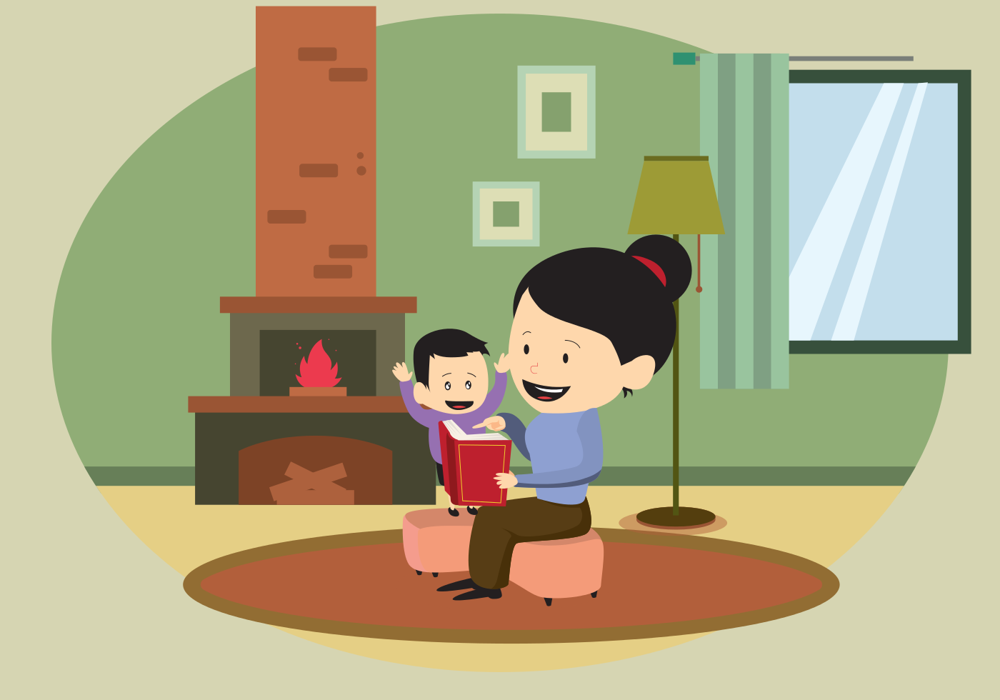

Cómo inicié la alimentación complementaria de mi bebé
Publicado el 5 de abril,2019
Si al momento de escuchar las palabras "alimentación complementaria"crees que ya viene lo mejor y que tu bebé está esperando con ansias a probar todos esos manjares de la vida y ya no solo tomar leche sino un sin fin de alimentos diversos? Estás muy equivocado.
Entrar a la alimentación complementaria es todo un suceso, pues es algo que nuestros bebés nunca han probado y para ellos lo más delicioso y exquisito hasta este momento es la leche, ya sea materna o la fórmula y no la cambiarían ni por un plato repleto de tacos al pastor.
El intentar darles alimentos diferentes a la leche por primera vez es muy complicado y más aún si han tenido que tomar medicamentos como jarabes o gotas desde muy pequeños, pues piensan que lo único que queremos es darles más medicamento y tienen el antecedente de un sabor espantoso.
Much@s me dirán que la alimentación complementaria inicia a los 6 meses y que antes de esto mi pequeñ@ debe llevar una lactancia materna exclusiva, es decir solo leche (y sobre todo materna) sin jugos, agua o algún otro alimento, ni siquiera "probaditas", pero les comparto lo que a mi me ha funcionado, ya que he visto últimamente a muchos bebés de 8 meses que siguen tomando solo leche materna. Esto provoca que el bebé no se llene y quiera estar succionando muy seguido, además de que al no llevar una alimentación complementaria también comienzan a generarse problemas de peso y de sueño.
Queeeeeé? Problemas de sueño? Pero si estamos hablando de alimentación. Pues sí, así es, en el sexto mes de edad del bebé, la leche por sí sola no logra cubrir el total de las necesidades nutrimentales y como ya mencionaba, por tal razón querrá estar succionando constantemente y varias veces por la noche, lo que interrrumpirá sus horas de sueño.
Es por eso que en esta ocasión mi recomendación es que introduzcas las famosas "probaditas" desde el quinto mes de edad para que en el sexto mes, tu bebé acepte la comida sólida de una forma más fácil. No te estoy pidiendo que ya le des de comer tal cual al bebé, sólo que pruebe. A continuación te dejo algunos tips para que inicies la alimentación complementaria a base de probaditas:
- Nunca deberá alimentarse al bebé en posición acostada, debe estar sentado o semisentado.
- Empieza por acercarlo a la mesa cuando tú y tu familia están comiendo para que comprenda y vea que ustedes también comen
- Muéstrale frutas y vegetales para que comience a distinguir formas y colores.
- Enseñale que disfrutas comiendo lo que pretendas que el bebé pruebe.
- No combines alimentos, ofrécelos por separado para favorecer la identificación de sabores, texturas y colores.
- Dale sólo porciones muy pequeñas y sólo lo que el bebé acepte, no más.
- En cuanto el bebé deje de aceptar con gusto lo que le ofreces ya no insistas.
- Ofrece primero el alimento sólido o semisólido y después la leche.
- Cuando le des líquidos diferentes a la leche, ofrécelos en vasito entrenador
- Debes considerar el estado de salud del bebé y los antecedentes heredofamiliares como alergias a la ingestión de diferentes alimentos.
Recuerda que una alimentación correcta es completa, equilibrada, variada, suficiente y adecuada.
Que te vaya de maravilla en esta nueva etapa.
Bienvenido a Moments con M de mamá

Gracias por leer este blog, creado por Mariana Pacheco con el fin de hacer la vida familiar más divertida, compartir tips para padres, actividades familiares divertidas, ideas de comida y estilo de vida de las mujeres entre otras cosas.
Sígueme